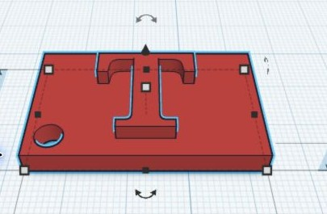
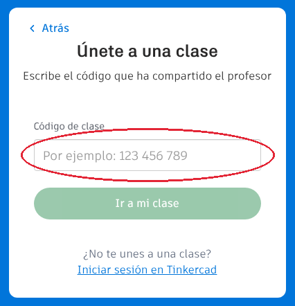
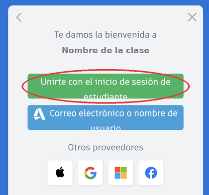
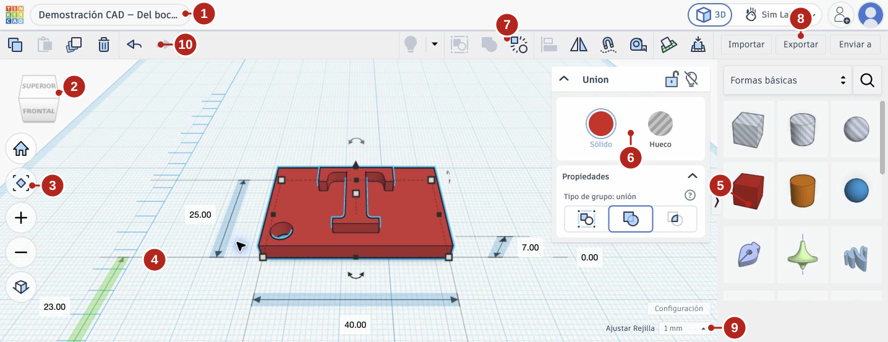
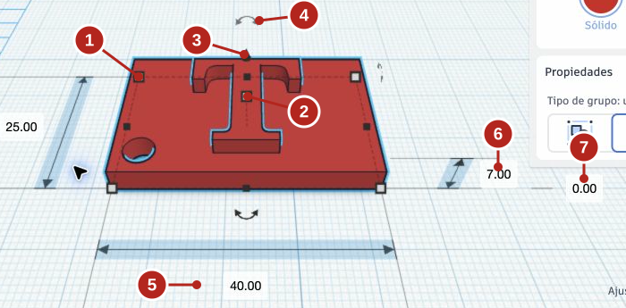
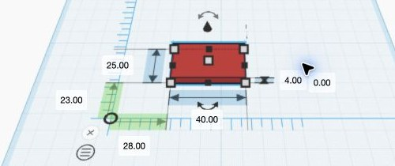
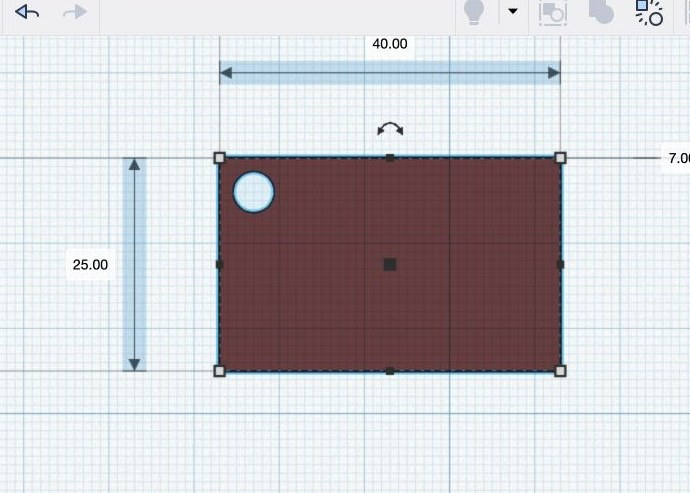
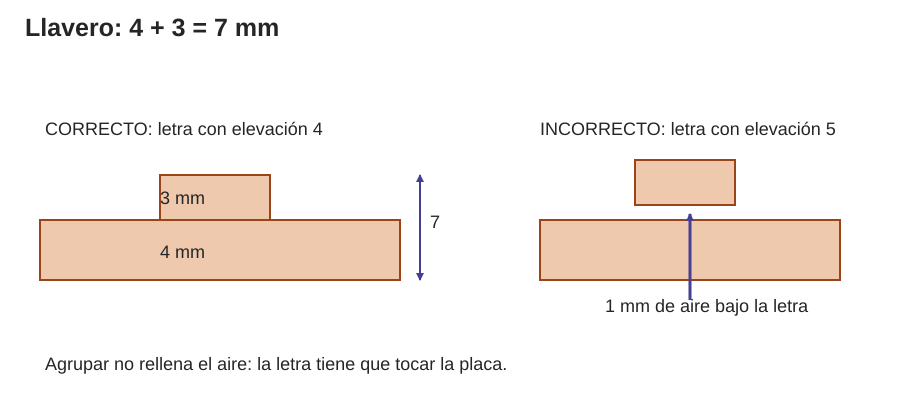
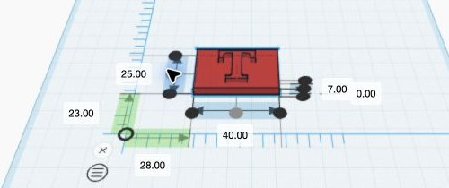

Contenido
Lo que vas a conseguir
Vas a diseñar tu primer objeto en 3D: un llavero con una letra en relieve y un agujero para la anilla. Lo que aprendas hoy lo usarás en toda la unidad.

¿Qué es el diseño 3D?
Diseñar en 3D con ordenador se llama CAD. En lugar de dibujar, construyes el objeto juntando formas sencillas —cajas, cilindros, letras— como piezas de construcción, cada una con medidas exactas en milímetros. Después, ese diseño se puede fabricar con una impresora 3D o servir de plano para hacerlo a mano.
Todo objeto tiene tres medidas, una por cada dirección o eje:
- X: el ancho (de izquierda a derecha).
- Y: el fondo (de delante a atrás).
- Z: el alto (de abajo arriba).
1. Entra en Tinkercad
Tinkercad es un programa de diseño 3D gratuito que funciona en el navegador. Entrarás en la clase que ha creado tu profesor, sin usar ninguna cuenta personal.
- Abre el navegador y ve a tinkercad.com/joinclass.
- Escribe el código de clase que te da tu profesor y pulsa Ir a mi clase.

- Pulsa el botón verde Unirte con el inicio de sesión de estudiante. No elijas Google, Apple ni las otras opciones.

- Escribe tu usuario IdEA (el mismo con el que entras en Moodle, sin contraseña) y pulsa Ir a mi clase.

- Ya estás en tu clase. Pulsa Crear y elige Diseño 3D: se abre el editor.
- Arriba a la izquierda aparece un nombre inventado para tu diseño. Haz clic en él, escribe practica_llavero y pulsa Intro.
Si no puedes entrar: revisa que el código y el usuario estén bien escritos, sin espacios. Si sigue sin funcionar, levanta la mano: no crees una cuenta nueva.
2. Conoce la pantalla

- Nombre del diseño. Haz clic para cambiarlo.
- Cubo de vistas. Haz clic en una cara para mirar desde arriba, de frente…
- Botones de vista: volver a la vista inicial, encuadrar, acercar y alejar.
- Plano de trabajo. La cuadrícula azul: es tu mesa de trabajo.
- Panel de formas. Arrastra desde aquí cajas, cilindros, letras…
- Inspector: botones Sólido y Hueco y otras opciones de la forma. Aparece al seleccionar una forma.
- Herramientas como Agrupar o Alinear. Si pasas el ratón por encima de un botón, verás su nombre.
- Exportar. Lo usarás para entregar tus diseños.
- Ajustar rejilla. Cuánto salta una forma cuando la arrastras.
- Copiar, duplicar, borrar y deshacer. Deshacer también funciona con Ctrl + Z.
3. Muévete por la escena
Mover la cámara cambia desde dónde miras, no el objeto. Lo usarás todo el rato para comprobar tus piezas.
| Quiero… | Hago… |
|---|---|
| Girar alrededor del objeto | Arrastro con el botón derecho del ratón |
| Acercarme o alejarme | Giro la rueda del ratón |
| Desplazar la vista | Mayús + arrastrar con el botón derecho |
| Mirar desde arriba, de frente o desde abajo | Clic en esa cara del cubo de vistas (gíralo para ver la cara INFERIOR) |
| Recuperar la pieza si la pierdo | Botón de encuadrar o tecla F |
4. Tu primera forma: una placa con medidas exactas
Al hacer clic en una forma aparecen unos controles llamados asas. Cada asa sirve para una cosa:

- Cuadradito blanco de una esquina: cambia ancho y fondo.
- Cuadradito blanco de arriba: cambia la altura.
- Cono negro: sube o baja la forma sin cambiar su tamaño.
- Flecha curva: gira la forma.
- Medidas de ancho y fondo, en mm.
- Altura de la forma.
- Elevación: a qué altura empieza la forma. 0 = apoyada en el plano.
Para escribir una medida exacta, haz clic en un cuadradito blanco: aparecen los números. Haz clic en el número, escribe el valor y pulsa Intro.
Ahora tú. Arrastra un Cubo desde Formas básicas al plano y conviértelo en una placa de 40 × 25 × 4 mm (ancho 40, fondo 25, alto 4).
Compruébalo: al seleccionarla ves 40, 25 y 4, y la elevación es 0.

Piensa. Si escribes 3 en la elevación de la placa, ¿se hace más gruesa?
Ver respuesta
No. Sigue midiendo 4 mm de alto, pero ahora empieza en 3 mm y acaba en 7 mm: está flotando. Tamaño (cuánto mide) y elevación (dónde empieza) son cosas distintas.
5. Haz un agujero: sólido y hueco
En Tinkercad los agujeros no se taladran: se colocan. Cualquier forma puede ser Sólido (añade material) o Hueco (quita material). Pones un cilindro hueco donde quieres el agujero y lo agrupas con la placa: al agrupar, el hueco quita el material que atraviesa.
- Arrastra un Cilindro al plano. Dale 5 × 5 mm (un círculo de 5 mm de diámetro) y 4 mm de alto, igual que la placa.
- Con el cilindro seleccionado, pulsa Hueco en el inspector. Se vuelve gris y transparente.
- Arrástralo cerca de una esquina de la placa, entero dentro de ella y lejos del centro, que es donde irá la letra. Comprueba que su elevación es 0.
- Selecciona la placa y el cilindro a la vez: arrastra un rectángulo que los rodee a los dos, o haz clic en uno y Mayús + clic en el otro.
- Pulsa Agrupar en la barra de herramientas (o Ctrl + G).

Truco: un hueco algo más alto que la placa (6 mm) y con elevación −1 atraviesa siempre, aunque lo coloques un poco mal.
6. Pon una letra encima: alinear y subir
La letra tiene que cumplir dos cosas: estar centrada sobre la placa, vista desde arriba, y estar apoyada encima, ni flotando ni hundida. Para lo primero usarás la herramienta Alinear; para lo segundo, la elevación.

- Busca la forma Texto en Formas básicas (baja un poco en el panel) y arrástrala al plano. En el inspector, cambia el texto por una T.
- Dale unos 18 mm de fondo, como mucho 20 de ancho y 3 mm de alto.
- Selecciona la placa y la letra. Pulsa Alinear (o la tecla L): aparecen puntos negros alrededor. Haz clic en el punto del centro de la línea de abajo y en el del centro de la línea lateral. No toques los puntos de la línea vertical.
- Selecciona solo la letra y escribe 4 en su elevación: así empieza justo donde acaba la placa.
- Selecciona todo y pulsa Agrupar.

Para ampliar. Si vas bien de tiempo, prueba el simulador: elige «Letra sobre una base», predice dónde queda la letra con cada elevación y compruébalo.
7. Revisa tu llavero
Gira la vista y comprueba: 40 × 25 mm y 7 de alto; el agujero se ve por arriba y por abajo; de lado, la letra toca la placa; el diseño se llama practica_llavero.
| Si te pasa esto… | Prueba esto |
|---|---|
| La letra flota (aunque esté agrupada) | Agrupar no pega: su elevación tiene que ser 4, la altura de la placa. |
| La letra está hundida | Has alineado también en vertical. Ctrl + Z y alinea solo ancho y fondo. |
| El agujero no se ve por abajo | Revisa la elevación y la altura del hueco (apartado 5). |
| Se ha movido todo | Ctrl + Z deshace paso a paso. |
| Lo has agrupado y quieres corregir algo | Selecciona el grupo y pulsa Desagrupar (Ctrl + Mayús + G). |
Para ampliar: otro llavero
Sin mirar los pasos, diseña otro llavero: placa de 30 × 20 × 3 mm, una letra de 2 mm de alto encima y un agujero de 4 mm de diámetro. ¿Cuánto medirá de alto en total? Compruébalo en Tinkercad.
Ver respuesta
5 mm: 3 de la placa + 2 de la letra, con la letra en elevación 3.
Compruébalo
Comprueba si has entendido lo esencial de Tinkercad antes de seguir.